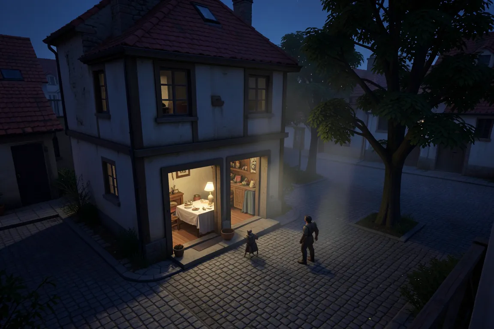

игры · 1993–2002 · также: Предрендеренное 3D, Фиксированная камера с отрендеренными сценами, Статичные кадры в духе Myst
Комнаты и улицы рендерятся офлайн в 3D-программе и показываются статичными картинками с фиксированных ракурсов. Игрок движется низкополигональной фигурой или курсором по сцене с гораздо большим светом и деталями, чем консоль способна нарисовать.

Главная идея
Если камера не движется, каждый вид может быть готовым рендером, скомпонованным как кадр фильма.
Принципы дизайна
Компонуйте каждый вид как статичный кадр: фиксированная камера с сильной диагональю или низким углом.
Рендерите фон офлайн с мягкими тенями и множеством источников света.
Согласуйте фигуру в реальном времени с фоном по направлению света.
Берите драматичные ракурсы: сверху, снизу, через дверной проём.
Переключайте виды, когда игрок пересекает границу.
Рисуйте маски глубины, чтобы фигура уходила за стол или колонну.